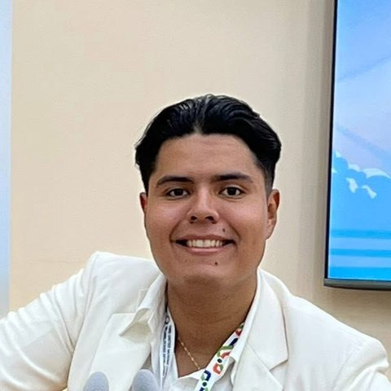
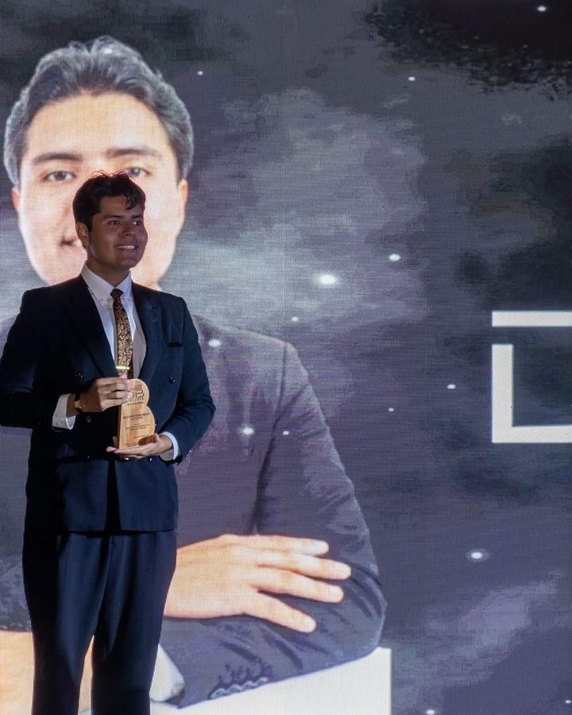
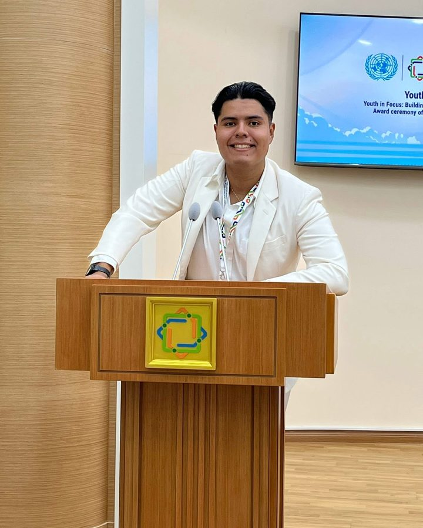
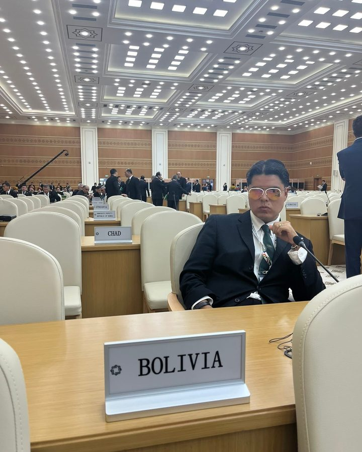
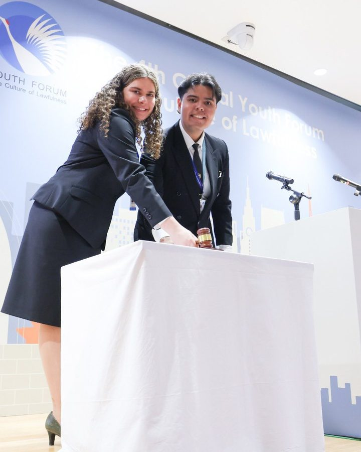

Carlos Andrés
Olivera Caballero
Fundador de Bookcubers
Youth Advisor · Youth4Rights
Santa Cruz de la Sierra, Bolivia
Galardón Destacados Bolivia 2026Sígueme
Instagram@dcharlie22Convocatorias
Global Youth Poster CompetitionSube tu cartel: ¿qué significa la democracia para vos? 15 a 25 años · hasta el 31 de octubre Bases del concursoConvocatoria oficial · los 10 ganadores se exhiben en Ginebra InterMUN 2026Modelo de Naciones Unidas de la UAGRM · inscripciones e invitaciónTrayectoria




Hecho en Santa Cruz, Bolivia